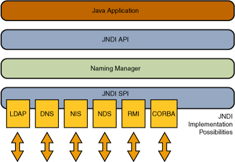

JNDI
Introduction
JNDI (Java Naming and Directory Interface, Java Naming and Directory Interface) is an API that provides naming and directory access services for Java applications, allowing clients to discover and find data and objects through names, and are used to provide dynamic configuration-based calls. These objects can be stored in different naming or directory services, such as RMI, CORBA, LDAP, DNS, etc.
Among them, Naming Service is similar to the K/V pair of hash table, and obtains the corresponding service through the name. Directory Service is a special Naming Service that uses a directory-like method to access services.

JNDI Injection
JNDI injection was proposed in 2016 by pentester on BlackHat USA’s A Journey From JNDI LDAP Manipulation To RCE issue.
The attack process is as follows
The attacker binds the Payload to the attacker’s naming/directory service
Attacker injects absolute URL into vulnerable JNDI lookup method
Application execution search
The application connects to an attacker-controlled JNDI service and returns to Payload
The application decodes the response and triggers the payload
Attack payload
JDNI mainly has several attack payloads:
CORBA
IOR
JNDI Reference
LDAP
Remote Location
Remote Object
RMI
Serialized Object
RMI Remote Object
The attacker implements a RMI malicious remote object and binds it to the RMI Registry, and places the compiled RMI remote object class on HTTP/FTP/SMB and other servers. The Codebase address is set by the java.rmi.server.codebase property of the remote server, and is for the victim’s RMI client to be loaded remotely.
The utilization conditions are as follows:
The context of the RMI client allows access to remote Codebase.
The value of the property ``java.rmi.server.useCodebaseOnly` is false.
After JDK 6u45 and 7u21, the value of java.rmi.server.useCodebaseOnly defaults to true.
RMI + JNDI Reference
The attacker returns a JNDI Naming Reference through the RMI service. When the victim decodes the Reference, he will load the Factory class at the remote address specified by the attacker. In principle, this method does not use the RMI Class Loading mechanism, so it is not restricted by the java.rmi.server.useCodebaseOnly system attributes. However, the JNDI Reference remote loading of the Object Factory class in Naming/Directory service is restricted after JDK 6u132, JDK 7u122, and JDK 8u113. The default value of system properties com.sun.jndi.rmi.object.trustURLCodebase`, ``com.sun.jndi.cosnaming.object.trustURLCodebase becomes false, that is, the default loading of Reference from remote Codebase is not allowed. Factory category.
LDAP + JNDI Reference
Java’s LDAP can store specific Java objects in attribute values, and the Reference of the LDAP service remote loading Factory class is not subject to com.sun.jndi.rmi.object.trustURLCodebase, com.sun.jndi.cosnaming The limitations of .object.trustURLCodebase and other attributes are more applicable.